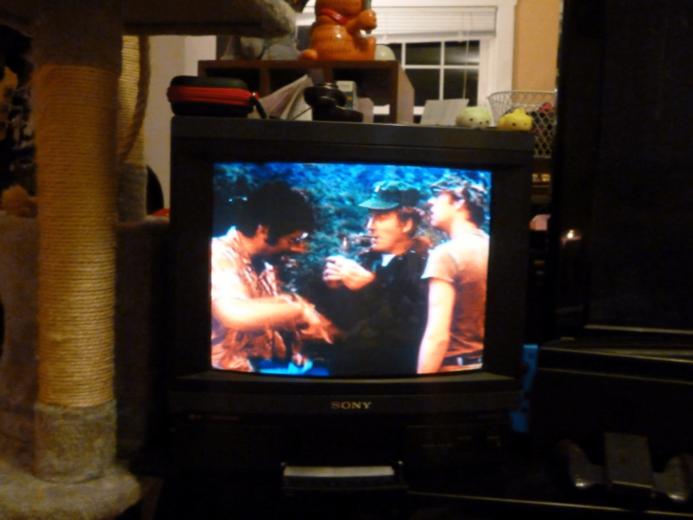

M*A*S*H
1970
What a strange movie. There was some weird sexism and sexual harrassment, but I guess they thought that was just funny in the 1970s... They played football towards the end. I'm not exactly sure anything else actually happened, they all seemed unhappy with their current disposition as being in the army. I think it had it's time, maybe the TV show is better. I'll check that out at some point, but now is not the time. 5/10.
Sidenote: Harold from Harold and Maude is in this!